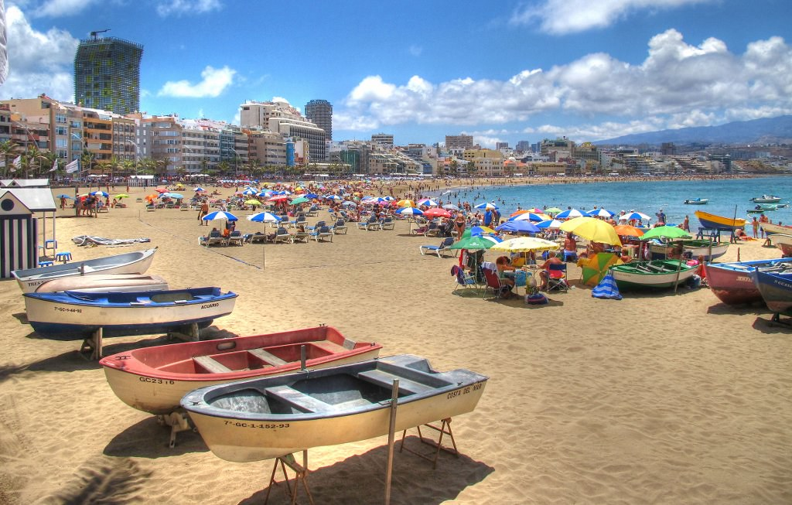

<ion-content>

  <div class="player" *ngIf = "id_quests=='95'">
    <iframe style="width: 100%;" src="../../assets/youtube/player.html" frameBorder="0"></iframe>
  </div>

  <div class="ion-padding" *ngIf = "id_quests=='95'">
    <ion-button (click)="openMyVideo('5girxUw8x0E')">Open Video</ion-button>
  </div>

  <div class="player" *ngIf = "id_quests=='55'">
    <iframe style="width: 100%;" src="../../assets/soundcloud/player.html" frameBorder="0"></iframe>
</div>

<div class="images" *ngIf = "id_quests=='105'">
  
</div>

<!-- En esta URL se explica como usar el GoogleMaps -->
<!-- https://docs.google.com/presentation/d/e/2PACX-1vScoho1ensbR4qCI9AIuQN55BZVvK73pAjI7sumDvW3CrxxHnrmpXWUjx2-8CpFibqU1EjLKCRhuthJ/pub?start=false&loop=false&delayms=3000#slide=id.g282d0a7bfd_0_140 -->
<!-- Para que se vea el mapa hay que lanzar con >> ionic cordova run browser (no funciona ionic serve) -->
<!--<div id="map_canvas" *ngIf = "id_quests=='145'"></div>-->
<div id="mapa_leaflet" *ngIf = "id_quests=='145'"></div>

<div class="video" *ngIf = "id_quests=='175'">
  <iframe src="../../assets/vr/telde-sanjuan-360-no-vr.html" frameBorder="0"></iframe>
</div>

<div class="ion-padding" *ngIf = "id_quests=='175'">
  <ion-button expand="block" href="../../assets/vr/telde-sanjuan-360.html">Pantalla completa</ion-button>
</div>

<div *ngIf = "id_quests=='200'">
    <ion-button expand='block' margin (click)="escanearCodigo()">Click to scan a barcode</ion-button>

    <div *ngIf="response_qr">
      <div class="ion-padding">
        <p>Scanned Code Text : <b>{{ response_qr }}</b></p>
      </div>
    </div>

</div>


  <div class="ion-padding">
    <p>Estás viendo la quest: {{ id_quests }}</p>
  </div>


</ion-content>
